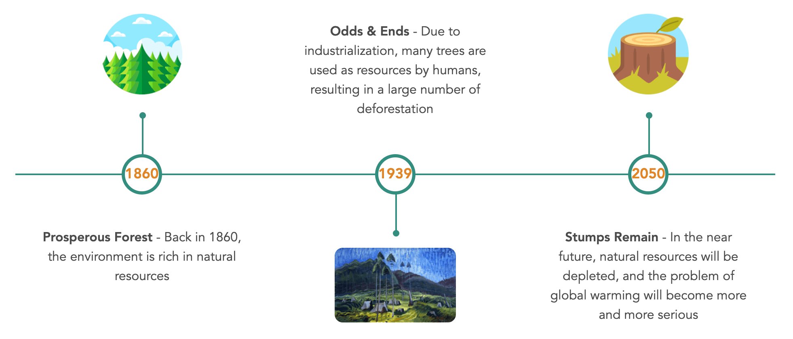

Odds and ends.
AR Developer | UI Designer | UI Developer
University of Waterloo
Group Project
1 Month
TOOLS
CONTRIBUTIONS
- 💡 Fully responsible for UI design
- 💡 Completed the UI development independently in Unity
- 💡 Conceptualized AR interaction components and implemented them in Unity
- 💡 Tested on an iOS device and fixed bugs to ensure the usability

About Odds and Ends 🌲
AR & UnityIs climate change a recent issue? The answer is no. It caught people's attention many years ago. In 1939, Canadian artist Emily Carr created a painting called Odds and Ends, which tells the story of deforestation caused by industrialization. In this project, we bring the story to life through AR, that we can experience everything Emily saw in 1939 and what the future might look like if we continue to ignore problems.
This AR tells an environmental story.
The project tells the story behind Emily Carr's artwork Odds and Ends through AR. The painting presents an environmental story with strong themes of conservation and giving to nature. In this painting, the stump has a torn ridge called the Screamer. The Screamer represents the inner voice and creates an image of the environment that the audience can relate to. A glimpse into the environment in which we live highlights the strength of character and the story's central themes of destruction in preservation and sacrifice. Our story will begin with the invasion of people's lives by the excessive cutting of trees.

How the narrative is presented?
The story is told in chronological order from Emily's perspective, through three different time periods, namely, Prosperous Forest in 1860, Odds & Ends in 1939 and Stumps Remain in 2050. There is a question that represents the core of the story - how the environment would go from lush to lifeless. The story highlights the impact of industrialization, which is gradually replacing forests. The destruction of natural resources has not only affected the environment but also the lives of people whose lands have been destroyed.
Platforms.
AR supports virtual interactable content layered onto the live camera feed on a phone to create experiences that are situated within a real-world setting.
- Building Platform: Unity + Vuforia AR Engine + Xcode
- UI Design Platform: Figma
- Collaborate Tool: Unity Collaborate

Environments.
- Virtual interactable content onto the live camera feed on a phone to create experiences that are situated within real world setting
- Standing in nature but interacting with an electronic device
- The nature scene serves as an enhancer to the entire experience, with the narrative world layered on top of the real world
Sensory Experience Considerations: Background music - natural sound & sound effect - sound of leaves shaking

UI & interaction design.
Entrance Scene
Introduce the experience and preparation conditions that maximize the user experience.
Interactive Slider
Drag the slider handle to switch between the scenes from 1860 to 2050.
Narrative Control
Play or pause the narratives by pressing the button.
The narrative
will automatically stop when the slider handle is dragged.
Prototype showcase.
* YouTube video. VPN is required in China.